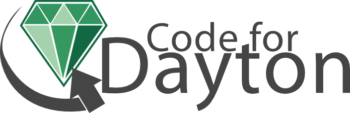

Introductions
This workshop was organized and taught by members of the three Dayton area meetups listed below. If you have fun during this workshop and want to learn more, please consider joining. The tech community in Dayton is extrordinarily vibrant and these meetups are a great chance to network and learn along with some of the best programmers in the area.
Code for Dayton
 We are a Code for America Brigade, which means we're volunteers that contribute our talents toward improving the way our local governments and community organizations use the web to interact with their constituents.
Our goal is two fold - we increase citizen engagement with municipal government, and show government and community organizations what is possible with open source and open data.
Girl Develop It
 We are a local chapter of a national non-profit Girl Develop It, that began
as a call to action for women, by women who were tired of the low representation of women in tech, and wanted to make a difference. Our vision is to create a network of empowered women who feel confident in their abilities to code and build
beautiful web and mobile applications. By teaching women around the world from diverse backgrounds to learn software development, we can help women improve their careers and confidence in their everyday lives.
We are a local chapter of a national non-profit Girl Develop It, that began
as a call to action for women, by women who were tired of the low representation of women in tech, and wanted to make a difference. Our vision is to create a network of empowered women who feel confident in their abilities to code and build
beautiful web and mobile applications. By teaching women around the world from diverse backgrounds to learn software development, we can help women improve their careers and confidence in their everyday lives.
We are committed to making sure women of all races, education levels, income and upbringing can build confidence in their skill set to develop web and mobile applications. We service that mission by offering events and affordable classes and we pride ourselves on being inclusive of all gender identities and ethnicities.
Dayton Data Visualization
The Dayton Data Visualization meetup was started by Michael Bowman and Chris Dickman of Applied Information Sciences in November of 2014 as a way to gather Dayton area data visualization experts to network and share knowledge.
Since then, we've grown to 300 members and have hosted a number of great speakers on a wide variety of topics.